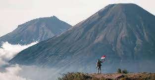

KEINDAHAN INDONESIA

Gunung
adalah sebuah bentuk yang menonjol di atas wilayah
sekitarnya. Sebuah gunung biasanya lebih tinggi dan curam dari sebuah bukit ,
tetapi ada kesamaan dan penggunaan sering tergantung dari adat lokal